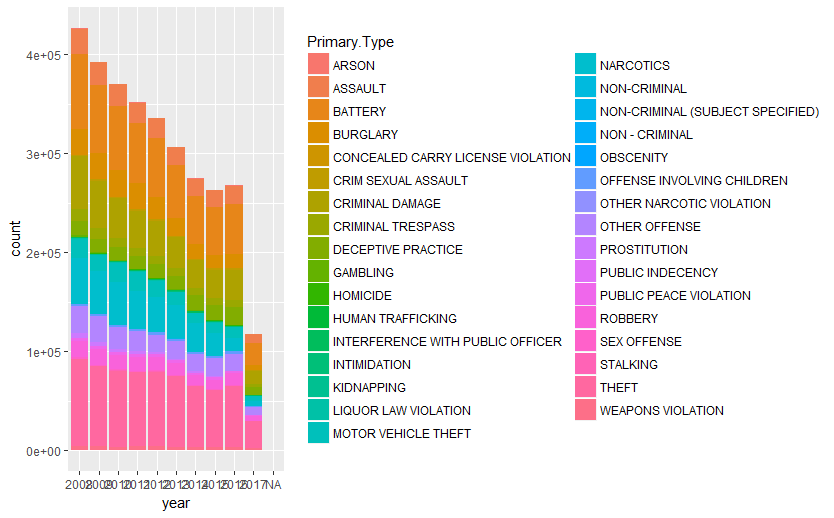

	<h2><a href="./CrimeData.html">Data visualization to compare crime statistics in DC and Chicago</a></h2>
	<p class="post-date">July 18, 2017</p>
	<hr id='top-line'>

	<article class="post-content">
	<p style="text-align:center;">
    
    </p>
    <p style="text-align:center;">
    
    </p>
	</article>
